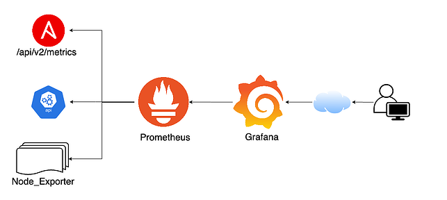
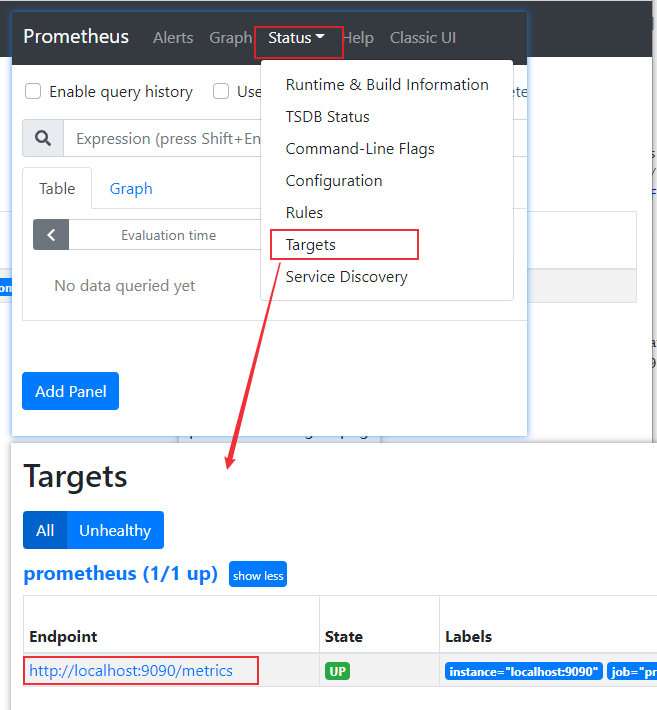
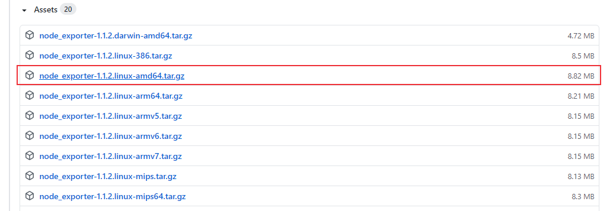
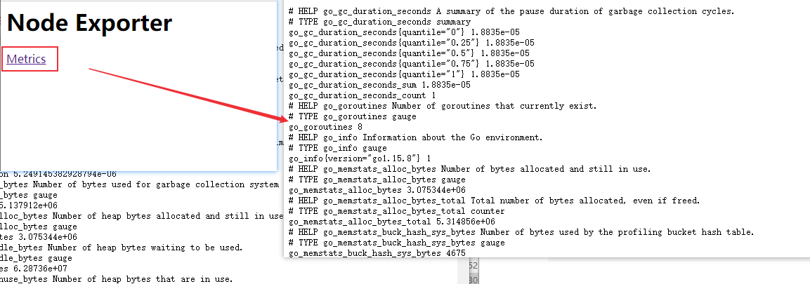
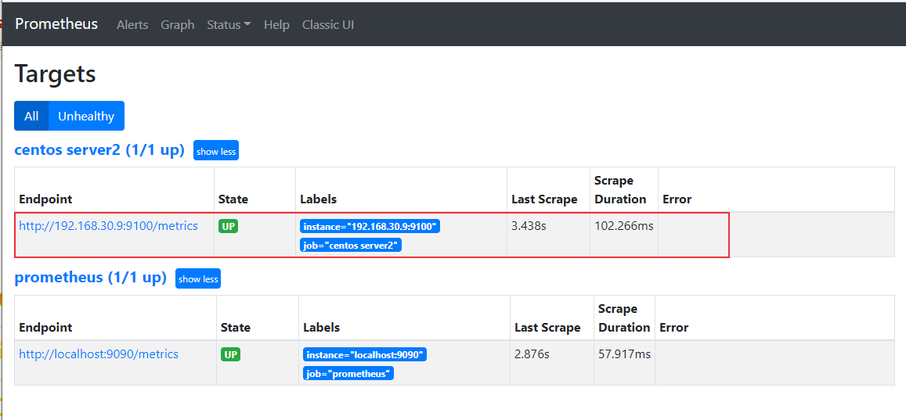
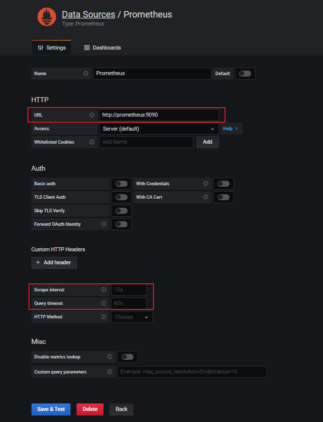
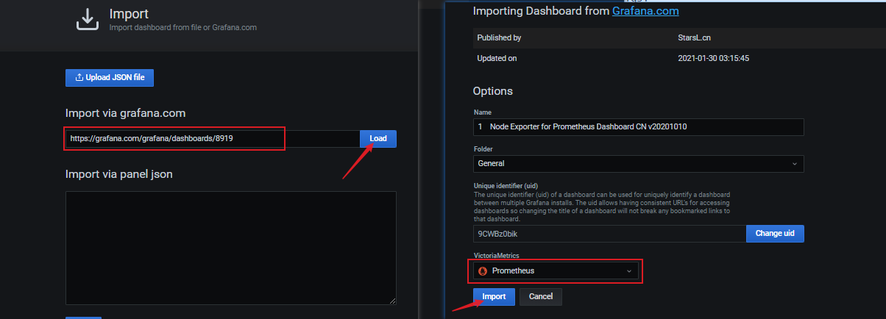
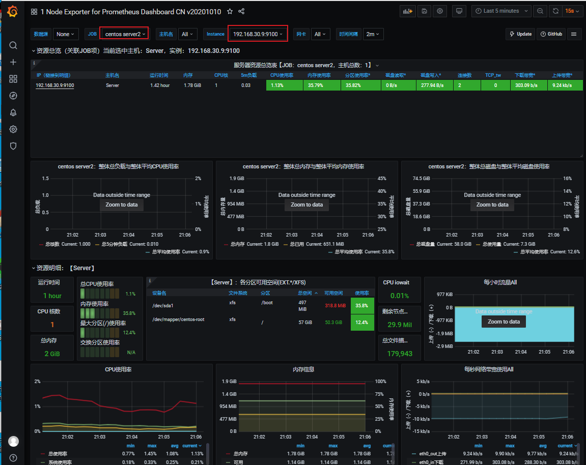

Prometheus 是一个开源的服务监控系统和时间序列数据库，是一款开源系统监控和警报工具，在测试领域中，我们可以使用Promethues来监控压力测试时服务端的性能。
Prometheus简介
Prometheus使用Go语言开发，是最初在SoundCloud上构建的开源系统监控和警报工具，在2016年加入了Cloud Native Computing Foundation（CNCF）基金会，是继Kubernetes之后该基金会的第二个托管项目。
主要特性
多维数据模型，由指标名称和键值对标识的时间序列数据度量
PromQL查询语言
不依赖分布式存储；单个服务器节点是自治的
通过HTTP使用pull模式收集时间序列数据
支持通过中间网关推送时间序列数据
通过服务发现或静态配置发现目标对象
支持多种图形和仪表盘
组成
Prometheus由多个组件组成：
- Prometheus主服务器：用于抓取并存储时间序列数据
- 客户端库：用于检测应用程序代码
- 推送网关：支持短生命周期
- 各种exporter：HAProxy，StatsD，Graphite等服务收集服务器性能数据
- 警告管理器
- 各种支持工具
架构
Prometheus + Grafana 监控系统性能
主要用到了Prometheus，node exporter和Grafana，Prometheus和node exporter收集保存服务器性能数据，Grafana用于图形化展示数据。

docker安装Prometheus
docker hub地址：https://registry.hub.docker.com/r/prom/prometheus
docker安装：1
$ docker pull prom/prometheus
配置prometheus.yml文件
参考：https://github.com/prometheus/prometheus/blob/main/documentation/examples/prometheus.yml
新建/root/prometheus/prometheus.yml文件：1
2
3
4
5
6
7
8
9
10
11
12
13
14
15
16
17
18
19
20
21
22
23
24
25
26
27
28
29# my global config
global:
scrape_interval: 15s # Set the scrape interval to every 15 seconds. Default is every 1 minute.
evaluation_interval: 15s # Evaluate rules every 15 seconds. The default is every 1 minute.
# scrape_timeout is set to the global default (10s).
# Alertmanager configuration
alerting:
alertmanagers:
- static_configs:
- targets:
# - alertmanager:9093
# Load rules once and periodically evaluate them according to the global 'evaluation_interval'.
rule_files:
# - "first_rules.yml"
# - "second_rules.yml"
# A scrape configuration containing exactly one endpoint to scrape:
# Here it's Prometheus itself.
scrape_configs:
# The job name is added as a label `job=<job_name>` to any timeseries scraped from this config.
- job_name: 'prometheus'
# metrics_path defaults to '/metrics'
# scheme defaults to 'http'.
static_configs:
- targets: ['localhost:9090']
启动prometheus
我们要用Grafana展示prometheus监控数据，先启动Grafana，Grafana安装配置方法可参考：JMeter性能监控系统：Jmeter + InfluxDB + Grafana
启动命令：1
$ docker run -d -p 3000:3000 --name=grafana --network=grafana grafana/grafana:latest
启动prometheus：1
$ docker run -d --name prometheus --network grafana -p 9090:9090 -v /root/prometheus/prometheus.yml:/etc/prometheus/prometheus.yml prom/prometheus:latest --config.file=/etc/prometheus/prometheus.yml
启动后使用docker ps查看是否启动成功1
2
3
4[root@server prometheus]# docker ps
CONTAINER ID IMAGE COMMAND CREATED STATUS PORTS NAMES
0587156618c5 prom/prometheus:latest "/bin/prometheus --c…" About a minute ago Up About a minute 0.0.0.0:9090->9090/tcp prometheus
[root@server prometheus]#
浏览器访问：http://192.168.30.8:9090/
其中192.168.30.8是我的服务器主机ip地址

metrics为本地主机的数据，访问http://192.168.30.8:9090/metrics 可以查看采集的数据。
安装启动node exporter
node exporter用于收集系统数据，下面介绍它的使用方法。
node exporter github地址：https://github.com/prometheus/node_exporter

下载node_exporter-1.1.2.linux-amd64.tar.gz，安装到另一台Linux系统上
1 | [root@Server2 exporter]# tar -xvzf node_exporter-1.1.2.linux-amd64.tar.gz |
运行node exporter，端口号为9100（默认）：1
[root@Server2 node_exporter-1.1.2.linux-amd64]# nohup ./node_exporter --web.listen-address=":9100" &
启动后，浏览器输入http://192.168.30.9:9100/ 访问Node Exporter采集的数据，192.168.30.9为安装node exporter服务器的IP地址。

这时候在Prometheus是看不到这个节点的，因为没有建立连接，接下来配置prometheus.yml文件
配置Prometheus
配置前面创建的prometheus.yml文件(启动prometheus的那个服务器)，在scrape_configs下添加：
1 | scrape_configs: |
重启Prometheus：1
2$ docker restart prometheus
prometheus
重启成功后，刷新Prometheus页面，发现上线成功

配置Grafana
点击Configuration -> Data Sources -> Add data source 选择Prometheus
然后配置URL：http://prometheus:9090
修改抓取时间，查询超时时间等参数，设置完成后点击Save & Test

接下来配置Dashboard，在https://grafana.com/grafana/dashboards 中搜索选择别人开发好的面板，推荐https://grafana.com/grafana/dashboards/8919
点击Dashboards -> Manage -> Import，输入选择的dashboard地址，点击load，选择prometheus数据源，配置完成后点击Import。

监控界面显示：

总结
Prometheus提供了各种exporter，用于收集各种数据库、系统、中间件等性能数据，可参考https://prometheus.io/docs/instrumenting/exporters/ 查看所有官方或者第三方提供的exporter。
本文标题:系统性能监控：Prometheus + Grafana 监控服务器性能
文章作者:hiyo
文章链接:https://hiyongz.github.io/posts/performance-monitoring-for-server-with-prometheus/
许可协议:本博客文章除特别声明外，均采用CC BY-NC-ND 4.0 许可协议。转载请保留原文链接及作者。